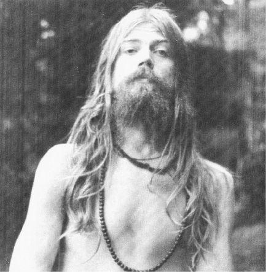

ENVIRONMENTAL CHANGES
Now at the same moment, there were obvious changes going on, because that checking back, over and over again, to the inner place inside myself, made me less and less attached to reassurance from the environment that I was all right. So I remember the moment when I was thrown out of Harvard. . .
There was a press conference and all of the reporters looked at me as if I was a prizefighter who had just lost a major fight, and was headed for oblivion, that kind of look you have for losers—real losers! And they stood there looking at me that way. Everybody was looking at me that way, and inside I felt, “What I’m doing is all right.”
Everybody, parents, colleagues, public, saw it as a horrible thing; I thought inside “I must really be crazy, now—because craziness is where everybody agrees about something,—except you!” And yet I felt saner than I had ever felt, so I knew this was a new kind of craziness or perhaps a new kind of saneness. But the thing was, I always seemed to be able to skirt the line: to keep it together. I didn’t ever DO anything quite crazy enough.
I was the guy that people would come to and say, “Look, would you calm Tim Leary—he’s too far out. If you’ll calm him and protect him and so on.” And I’d say, “I’ll help him with pleasure ’cause he’s that great a being.” And I’d help raise money and run the kitchen and clean the house and raise the children. . .
Well, we realized then that what we needed to do was to create certain kinds of environments which would allow a person, after being into another state of consciousness, to retain a certain kind of environmental support for new ways of looking at himself. After all, if you see yourself as God and then you come back from this state and somebody says, “Hey, Sam, empty the garbage!” it catches you back into the model of “I’m Sam who empties the garbage.” You can’t maintain these new kinds of structures. It takes a while to realize that God can empty garbage.
Now in 1962 or 3, Tim and Ralph Metzner with him (I was just given author’s credit because I took care of the kitchen) had come across the Tibetan Book of the Dead, which was a very close description of a number of these experiences. This book was 2500 years old, at least, and it had been used all those years for preparing Tibetan Lamas to die and be reincarnated. And when we opened it, we would find descriptions of the 49 days after death before rebirth, that were perfect descriptions of sessions we were having with psychedelics.
How could this be? The parallel was so close. Tim rewrote the book as a manual called “The Psychedelic Experience”, a manual for psychological death and rebirth, arguing that this was really a metaphor about psychological death and rebirth and not necessarily physical death and reincarnation.
Tim had gone to India, Ralph had gone to India, Allen Ginsberg had gone to India. I checked with everybody when they came back. There was Tim, being Tim and there was Ralph, being Ralph, and there was Allen, being Allen—and I realized that they had all had lovely experiences and seen a beautiful country and so on, but they were not finished looking for something.
And by 1966–7, I was in the same predicament. I was aware that I didn’t know enough to maintain these states of consciousness. And I was aware that nobody else around me seemed to know enough either. I checked with everybody I thought might know, and nobody seemed to know.
So I wasn’t very optimistic about India or psychedelics. By 1967 I had shot my load! I had no more job as a psychologist in a respectable establishment and I realized that we didn’t know enough about psychedelics to use them profitably.
But at that time I was still lecturing around the country on psychedelics to such diverse groups as the Food and Drug Administration, and the Hell’s Angels.
Then, along came a very lovely guy whom I had guided through some psychedelic sessions, an interesting guy, who had gone to the University of Chicago in his early teens and had taught seminars in Chinese Economics, had started a company called Basic Systems, which had been sold to Xerox, and now he had retired. He was about 35 and he had retired and taken his five million dollars or whatever he made, and was now becoming a Buddhist. He wanted to make a journey to the east to look for holy men and he invited me to go along. He had a Land Rover imported into Teheran and this was my way out. What else was I going to do at this point.
So I left to go to India, and I took a bottle of LSD with me, with the idea that I’d meet holy men along the way, and I’d give them LSD and they’d tell me what LSD is. Maybe I’d learn the missing clue.
We started out from Teheran, and for the next three months we had lovely guides and a most beautiful time and we scored great hashish in Afghanistan, and at the end of three months, I had seen the inside of the Land Rover, I had 1300 slides, many tape recordings of Indian music; I had drunk much bottled water, eaten many canned goods: I was a westerner traveling in India. That’s what was happening to me when I got to Nepal.
We had done it all. We had gone to see the Dalai Lama, and we had gone on horseback up to Amanath Cave up in Kashmir; we had visited Benares, and finally we ended up in Katmandu, Nepal. I started to get extremely, extremely depressed. I’m sure part of it was due to the hashish. But also, part of it was because I didn’t see what to do next.
I had done everything I thought I could do, and nothing new had happened. It was turning out to be just another trip. The despair got very heavy. We didn’t know enough and I couldn’t figure out how to socialize this thing about the new states of consciousness. And I didn’t know what to do next. It wasn’t like I didn’t have LSD. I had plenty of LSD, but why take it. I knew what it was going to do, what it was going to tell me. It was going to show me that garden again and then I was going to be cast out and that was it. And I never could quite stay. I was addicted to the experience at first, and then I even got tired of that. And the despair was extremely intense at that point.
We were sitting in a hippie restaurant, called the Blue Tibetan, and I was talking to some French hippies. . .
I had given LSD to a number of pundits around India and some reasonably pure men:
An old Buddhist Lama said, “It gave me a headache.”
Somebody else said, “It’s good, but not as good as meditation.”
Somebody else said, “Where can I get some more?”
And I got the same range of responses I’d get in America. I didn’t get any great pearl of wisdom which would make me exlain, “Oh, that’s what it is—I was waiting for something that was going to do that thing!”
So I finally figured, “Well, it’s not going to happen.” We were about to go on to Japan and I was pretty depressed because we were starting the return now, and what was I returning to? What should I do now?
I decided I was going to come back and become a chauffeur. I wanted to be a servant, and let somebody else program my consciousness. I could read holy books while I’d wait for whoever it was I was waiting for while they were at Bergdorf Goodman’s and I’d just change my whole style of life around. I could just get out of the whole drama of having to engineer my own ship for a while. This is a funny foreshadowing, as you’ll see.
The despair was extremely intense at that point. I was really quite sad.
